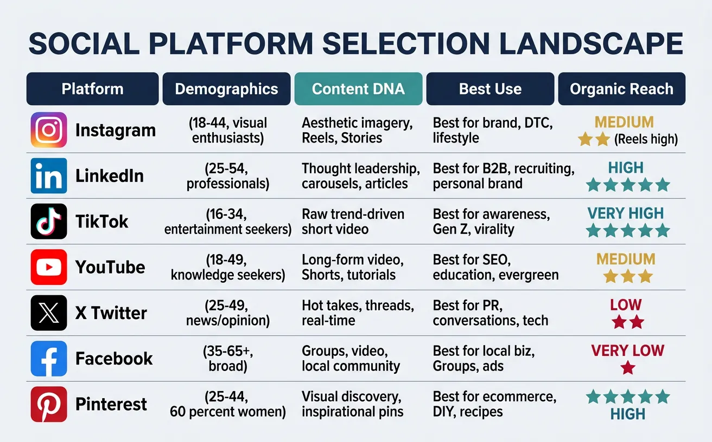
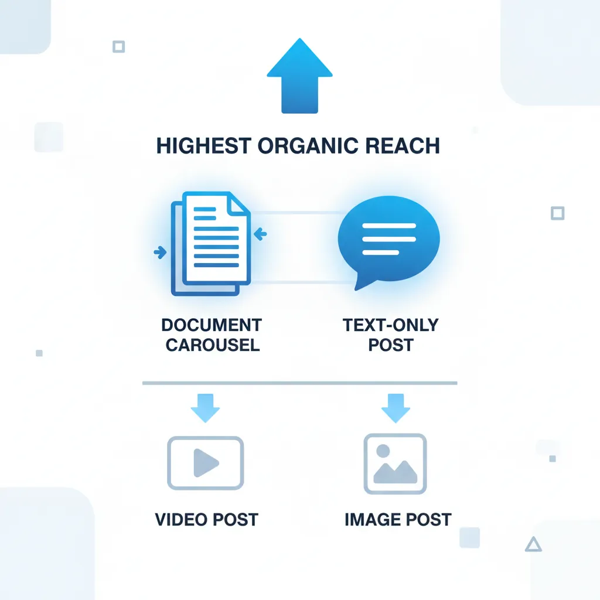
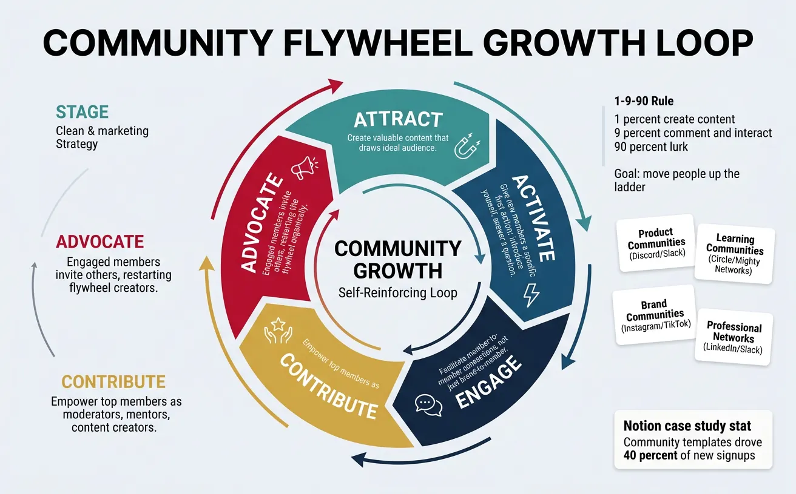
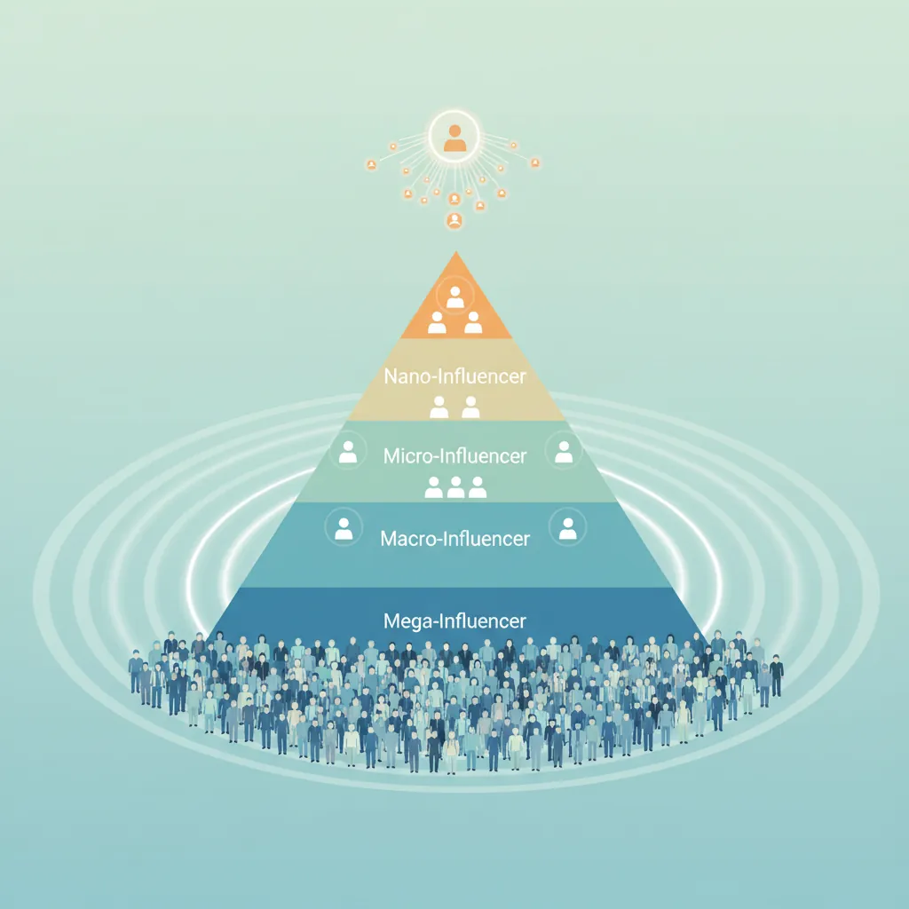
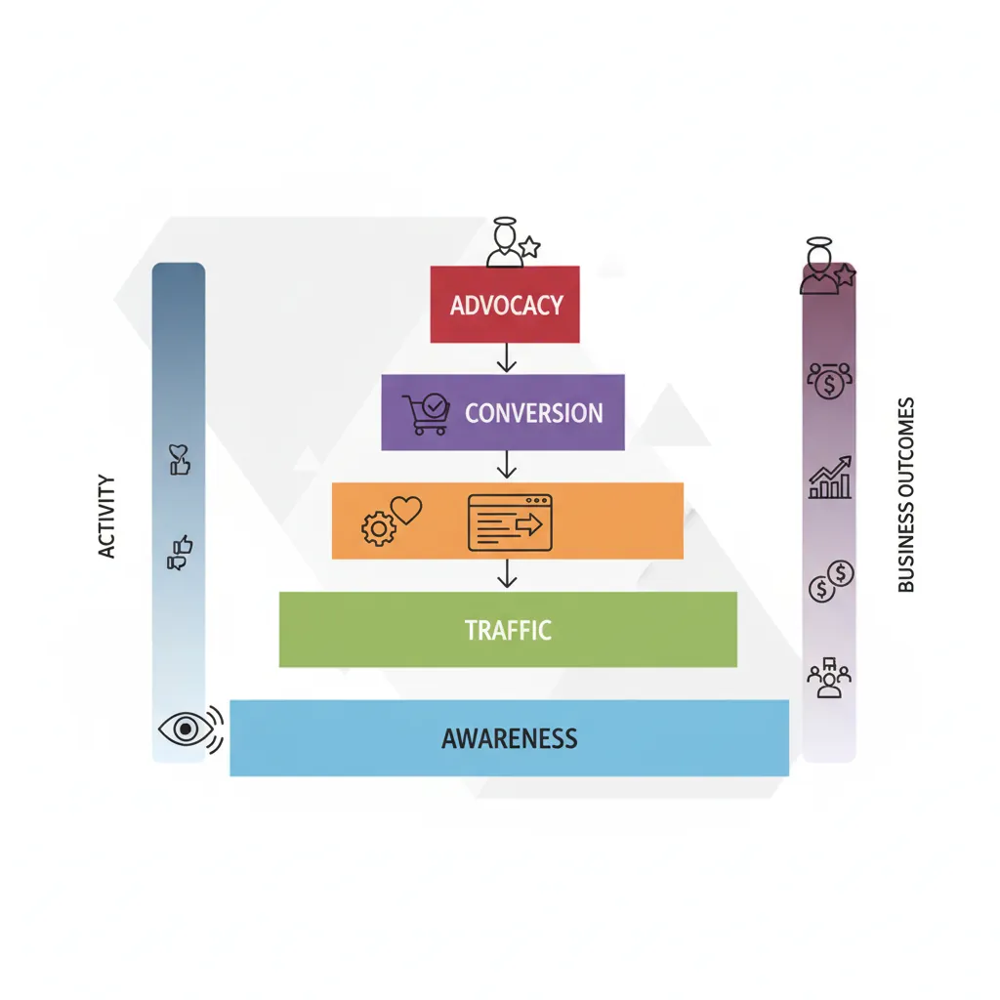

We use cookies to enhance your browsing experience, serve personalized content, and analyze our traffic.
By clicking "Accept All", you consent to our use of cookies. See our
Privacy Policy
for more information.
Marketing & Strategy Series Part 6: Social Media & Community Strategy
February 12, 2026Wasil Zafar26 min read
Master platform-specific strategies, community building, influencer partnerships, social commerce, and social media analytics for brand growth and engagement.
Part 6 of 21: Building on content marketing principles from Part 5, this article explores social media strategy—choosing platforms, building communities, leveraging influencers, and measuring social impact.
Social media isn't about being on every platform—it's about being remarkable on the right ones. Think of social platforms as different cities: each has its own culture, language, and customs. You wouldn't dress the same way for a beach holiday as you would for a boardroom meeting. Similarly, your content must fit the native culture of each platform.

Each social platform has distinct demographics, content DNA, and organic reach potential — choose based on audience fit
The Platform-Culture Fit Principle: Every social platform rewards content that matches its native format and user intent. A beautifully edited Instagram carousel will flop on TikTok, and a raw, authentic TikTok will look out of place on LinkedIn. Master the culture before mastering the tools.
Platform Selection Framework
Before posting anywhere, answer three questions: Where does your audience already spend time? Where can you create unfair content advantages? And where can you achieve your specific business goals?
Platform
Core Demographics
Content DNA
Best For
Organic Reach
Instagram
18-44, visual enthusiasts
Aesthetic imagery, Reels, Stories
Brand, DTC, lifestyle
Medium (Reels high)
LinkedIn
25-54, professionals
Thought leadership, carousels, articles
B2B, recruiting, personal brand
High (organic still strong)
TikTok
16-34, entertainment seekers
Raw, trend-driven short video
Awareness, Gen Z, virality
Very high (algorithmic)
YouTube
18-49, knowledge seekers
Long-form video, Shorts, tutorials
SEO, education, evergreen
Medium (search-driven)
X (Twitter)
25-49, news/opinion
Hot takes, threads, real-time
PR, conversations, tech
Low (declining)
Facebook
35-65+, broad
Groups, video, local community
Local biz, Groups, ads
Very low (pay-to-play)
Pinterest
25-44, 60% women
Visual discovery, inspirational pins
E-commerce, DIY, recipes
High (search + save)
The 2-Platform Rule: Most brands should master 2 platforms deeply rather than spreading thin across 5-7. Choose one primary platform (where your ideal customer lives) and one amplification platform (where content can be repurposed for reach). You can always expand once systems are proven.
Instagram & Visual Platforms
Instagram has evolved from a photo-sharing app to a full commerce and entertainment ecosystem. The algorithm now heavily prioritizes Reels over static posts, with Reels getting 2-3x more reach than carousels and 5-10x more than single images.
Instagram Content Architecture
Format
Best Use
Reach Potential
Engagement Type
Reels (15-90s)
Discovery, trends, tutorials
★★★★★
Views, shares, follows
Carousels (2-10 slides)
Education, storytelling, saves
★★★★☆
Saves, shares, comments
Stories (24h)
Behind-scenes, polls, urgency
★★☆☆☆ (followers only)
DMs, replies, sticker taps
Live
Q&A, launches, collaboration
★★★☆☆
Real-time comments
Static Posts
Brand moments, announcements
★★☆☆☆
Likes, comments
Case Study: Glossier's Instagram-First Strategy
DTC Beauty$1.8B Valuation
Glossier built a $1.8 billion brand almost entirely through Instagram and community. Their playbook:
UGC-first approach: 90% of content came from real customers, not professional shoots
DM conversations: The brand responded to every DM, treating Instagram as a 1:1 channel
Top-of-funnel communities: Created Into The Gloss blog first, then launched products the community requested
Aesthetic consistency: The "Glossier pink" became instantly recognizable—brand recall through color alone
Key lesson: Build the audience before the product. Community is the strategy, not a byproduct.
LinkedIn & Professional Networks
LinkedIn is the last platform where organic reach is still exceptional. A single post from an account with 5,000 followers can reach 50,000+ people. This is because LinkedIn's content supply is still far below demand—most users scroll but few create content.

LinkedIn content engagement rates by format: document carousels and text-only posts drive the highest organic reach
The LinkedIn Content Formula
LinkedIn rewards posts that generate meaningful conversation—dwell time, comments, and shares matter more than likes. The most successful content follows this pattern:
The Hook-Story-Insight Framework:
Hook (Line 1-2): A surprising statement or contrarian take that stops the scroll. "I fired our top-performing salesperson. Here's why..."
Story (Lines 3-12): A personal narrative with specific details—names, numbers, emotions. Abstract advice gets scrolled past.
Insight (Lines 13-15): The transferable lesson that makes the reader think "I can apply this." End with a question to invite comments.
Content Type
Avg. Engagement Rate
Best Posting Time
Ideal Frequency
Text-only posts
3.5-5%
Tue-Thu 8-10am
3-5x per week
Document carousels
4-8% (highest)
Tue-Wed 9am
1-2x per week
Video (native)
2-4%
Mon-Fri 7-9am
1-2x per week
Polls
5-10% (votes)
Any weekday
1x per week max
Newsletter articles
1-2%
Sunday evening
Weekly or biweekly
TikTok & Short-Form Video
TikTok's algorithm is fundamentally different from every other platform. It's an interest graph, not a social graph—meaning your content is shown based on what someone likes to watch, not who they follow. A brand-new account can reach millions with its first video.
How the TikTok Algorithm Works
Think of TikTok like a talent show, not a popularity contest. Every video starts with a small "test audience" of 200-500 viewers. If those viewers watch, rewatch, share, and comment, the algorithm expands the audience exponentially:
Tier 2: 1,000-5,000 views → Expanded if >60% watch-through rate
Tier 3: 10,000-100,000 views → Pushed to broader interest categories
Tier 4: 100K-1M+ views → Featured on trending/For You page nationally
The #1 metric: Completion rate. Videos that people watch to the end (or rewatch) get exponentially more distribution.
Case Study: Duolingo's TikTok Takeover
EdTech10M+ followers
Duolingo went from a forgotten app to cultural phenomenon through TikTok. Their approach broke every "corporate social media" rule:
Unhinged brand persona: The Duolingo owl became a chaotic character—thirst traps, threatening users, fourth-wall breaks
Zero product focus: Less than 10% of videos mentioned learning languages
Trend-jacking speed: Team created content within 2 hours of trending sounds
Employee-generated content: Real employees starred in videos, creating authentic parasocial relationships
Business impact: App downloads increased 40%, daily active users surged, and brand awareness among Gen Z reached 85%. The social team cost less than one TV commercial.
TikTok Content Pattern
Example
Why It Works
Story time hooks
"POV: You just found out your competitor..."
Creates curiosity loop; viewer must watch to end
Before/After
Transformation reveals, redesigns
Visual satisfaction drives completion rate
Educational + entertainment
"3 things nobody tells you about..."
Value + entertainment = save + share
Trend hijacking
Use trending sounds with brand twist
Algorithm boosts trending audio content
Reply-to-comment
Video replying to a viewer question
Creates content loops and viewer investment
Community Building
Community Strategy
A community is not just an audience with a comment section. An audience watches you; a community interacts with each other because of you. The shift from audience to community is the single most valuable transformation in modern marketing. Think of it this way: an audience is a classroom lecture, but a community is a study group—the value compounds when members contribute.

The community flywheel: attract → activate → engage → contribute → advocate creates self-reinforcing growth
The Community Flywheel
Great communities create self-reinforcing growth loops that reduce your marketing costs over time:
The Community Flywheel Model:
Attract: Create valuable content that draws in your ideal audience
Activate: Give new members a specific first action (introduce yourself, answer a question)
Engage: Facilitate member-to-member connections—not just brand-to-member
Contribute: Empower top members as moderators, mentors, and content creators
Advocate: Engaged members invite others, restarting the flywheel organically
Community Type
Platform
Best For
Example
Product Communities
Discord, Slack, Forums
SaaS, developer tools
Figma Community, Notion Ambassadors
Learning Communities
Circle, Mighty Networks
Education, coaching
On Deck, Reforge
Interest Communities
Reddit, Facebook Groups
Niche hobbies, passions
r/personalfinance
Brand Communities
Instagram, TikTok
DTC, lifestyle brands
GoPro, Lululemon
Professional Networks
LinkedIn, Slack
Industry networking, B2B
RevGenius, Pavilion
Case Study: Notion's Community-Led Growth
SaaS Productivity$10B Valuation
Notion grew from a niche tool to a $10 billion company primarily through community, not paid marketing:
Ambassador program: 200+ community ambassadors created templates, tutorials, and local meetups in 20+ countries
Template marketplace: User-created templates became Notion's best acquisition channel—each template was a free demo
YouTube ecosystem: Community creators built audiences teaching Notion, creating an unpaid marketing army
Reddit community: r/Notion (500K+ members) became a self-service support channel where users helped each other
Business impact: Community-sourced templates drove 40% of new signups. Support ticket volume dropped 30% as the community answered questions faster than the support team.
Engagement & Management
Community engagement follows the 1-9-90 rule: 1% of members create content, 9% comment and interact, and 90% lurk. Your job as community manager is to move people up this ladder—converting lurkers into contributors and contributors into leaders.
Engagement Tactics That Scale
Tactic
Effort Level
Impact
How It Works
Welcome rituals
Low (automated)
High (2x activation)
Personal welcome message + first action prompt
Weekly challenges
Medium
High (3x engagement)
Theme-based prompts that encourage sharing
Member spotlights
Low
Medium
Feature one member's success story weekly
AMA sessions
Medium
High (spike activity)
Monthly expert Q&A with live interaction
User-led workshops
Low (you facilitate)
Very High
Top members teach—deepens their commitment
Gamification
High (initial setup)
Medium-High
Points, badges, leaderboards for participation
Crisis Management in Social Media: Every brand eventually faces a social media crisis—a negative viral post, a product failure, or a PR incident. The STARS framework for crisis response:
S — Speed: Respond within 1 hour. Silence is interpreted as guilt or indifference
T — Transparency: Acknowledge the issue honestly. Don't delete comments or hide
A — Accountability: Own mistakes without deflecting to "a few bad actors"
R — Resolution: State concrete steps you're taking to fix the problem
S — Sensitivity: Match your tone to the severity. Don't joke during serious incidents
User-Generated Content (UGC)
User-generated content is the most powerful form of social proof. Consumers trust UGC 2.4x more than brand-created content, and ads featuring UGC get 4x higher click-through rates and 50% lower cost-per-click. It's authentic, scalable, and essentially free.
The UGC Ecosystem
UGC Type
Example
How to Generate
Usage Rights
Reviews & testimonials
Written reviews, video testimonials
Post-purchase email, incentives
Usually granted by default
Social posts
Customer photos, unboxings
Branded hashtag campaigns
Must request permission
Community content
Forum answers, templates
Platform participation
Check platform TOS
Creator content
Sponsored reviews, tutorials
Paid partnerships
Defined in contract
Employee content
Behind-the-scenes, day-in-life
Employee advocacy program
Employer agreement
GoPro's UGC Masterclass: GoPro's entire social strategy is built on customer content. They receive 6,000+ user videos daily and showcase the best on their channels. Their branded hashtag #GoPro has 50M+ posts on Instagram alone. By making customers the heroes, GoPro spends almost nothing on content creation while generating billions of organic impressions annually.
Influencer Marketing
Influencer Strategy
Influencer marketing has matured from celebrity endorsements to a sophisticated, performance-driven channel. The key insight: influence isn't about follower count—it's about trust density. A nano-influencer with 3,000 followers in a niche fitness community drives more conversions than a celebrity with 10 million followers who posts about everything.

The influencer tier pyramid: nano-influencers have the highest engagement rates while mega-influencers offer mass reach
The Influencer Tier System
Tier
Followers
Avg. Engagement Rate
Avg. Cost per Post
Best Used For
Nano
1K-10K
5-10%
$50-$500 or free product
Authentic reviews, local reach, niche communities
Micro
10K-100K
3-5%
$500-$5,000
Targeted campaigns, strong niche authority
Mid-Tier
100K-500K
2-3%
$5,000-$25,000
Balanced reach and engagement
Macro
500K-1M
1-2%
$25,000-$100,000
Brand awareness, major campaigns
Mega/Celebrity
1M+
0.5-1%
$100,000+
Mass awareness, cultural moments
The Influencer Selection Criteria (REACH):
R — Relevance: Does their audience match your target customer?
E — Engagement: Comments quality matters more than likes count
A — Authenticity: Do they genuinely use/like products in your category?
C — Content Quality: Would you be proud to have this associated with your brand?
H — History: Past brand collaborations—any conflicts or controversies?
Case Study: Daniel Wellington's Micro-Influencer Empire
Fashion/Watches$200M+ Revenue
Daniel Wellington built a $200M+ watch brand almost entirely through influencer marketing—with zero traditional advertising:
Volume over celebrity: Partnered with 5,000+ micro-influencers instead of a few celebrities
Free product model: Sent watches + unique discount codes to influencers (performance tracking built-in)
Consistent aesthetic: Every influencer post had a similar clean, minimal look—building brand recognition
User-generated hashtag: #DanielWellington became one of the most-used brand hashtags on Instagram (2M+ posts)
ROI insight: Their customer acquisition cost through influencers was 85% lower than through paid social ads. The brand proved that 100 micro-influencers outperform 1 macro-influencer for DTC products.
Partnership Management
Successful influencer partnerships go beyond one-off sponsored posts. The most effective relationships are long-term partnerships where creators become genuine brand advocates over time.
The Partnership Lifecycle
Phase
Activities
Duration
Key Deliverables
1. Discovery
Research, shortlist, verify audience authenticity
1-2 weeks
Target list of 20-50 prospects
2. Outreach
Personalized pitch, relationship building
1-2 weeks
Response rate 15-25%
3. Negotiation
Scope, pricing, rights, timeline
3-7 days
Signed contract with clear deliverables
4. Briefing
Brand guidelines, creative freedom, dos/don'ts
1-3 days
Creative brief document
5. Content Creation
Creator produces content, brand reviews
1-3 weeks
Approved content pieces
6. Publishing & Amplification
Post goes live, brand boosts/repurposes
Ongoing
Published content + paid amplification
7. Measurement
Track KPIs, ROI analysis, relationship review
2-4 weeks post
Performance report + renewal decision
The 80/20 Creative Brief Rule: Give influencers 80% creative freedom and only 20% brand direction. The audience follows the creator because of the creator's style—not because they want to see polished brand content. Specify: key message, required mentions, disclosure requirements. Don't specify: script, setting, editing style, exact wording.
Creator Economy
The creator economy has grown to a $250 billion industry (2024). Smart brands are moving beyond transactional influencer deals to building long-term creator ecosystems:
Program Type
Structure
Creator Incentive
Brand Benefit
Ambassador Programs
6-12 month contracts, monthly content
Stipend + commission + exclusives
Consistent brand presence, deeper storytelling
Affiliate Programs
Revenue share on tracked sales
10-30% commission per sale
Performance-based, unlimited scale
Co-Creation
Creator helps design products/collections
Royalties + creative credit
Built-in audience for launch, authenticity
White-Label Content
Brand licenses creator content for ads
Licensing fee + usage rights payment
Authentic-feeling ad content at scale
Legal & Compliance Essentials: Every country has advertising disclosure requirements. In the US, FTC mandates clear disclosure (#ad, #sponsored, or "Paid partnership" tag). In the EU, similar rules exist under consumer protection laws. Non-compliance risks fines for both brands AND creators. Always include disclosure requirements in contracts and verify compliance before amplifying.
Analytics & Commerce
Social Media Metrics
Social media metrics fall into two categories: vanity metrics (make you feel good) and actionable metrics (inform decisions). Focus on metrics that connect to business outcomes, not just follower counts.

The social metrics hierarchy: awareness → engagement → traffic → conversion → advocacy, connecting activity to business outcomes
The Social Metrics Hierarchy
Level
Metrics
What It Tells You
Action
Awareness
Impressions, reach, follower growth
How many people see your content
Optimize posting times, hashtags
Engagement
Engagement rate, saves, shares, comments
How deeply people interact
Double down on high-engagement formats
Traffic
Link clicks, CTR, referral traffic
Whether social drives website visits
Improve CTAs, landing pages
Conversion
Leads generated, signups, purchases attributed
Business impact of social
Track UTMs, optimize conversion paths
Advocacy
Share ratio, brand mentions, NPS of social audience
Amplification Rate: Shares ÷ Total Posts (measures how much content is redistributed)
Virality Rate: Shares ÷ Impressions × 100 (percentage of viewers who share)
Social Share of Voice: Your Mentions ÷ Total Industry Mentions × 100
Cost Per Engagement: Total Spend ÷ Total Engagements
Social Commerce
Social commerce is projected to reach $1.2 trillion globally by 2025. The lines between discovery, entertainment, and shopping are disappearing. Platforms like Instagram, TikTok, and Pinterest now offer full checkout experiences without leaving the app.
Social Commerce Feature
Platform
How It Works
Best For
Shoppable Posts
Instagram, Pinterest
Tag products in posts; tap to view and buy
Fashion, beauty, home decor
Live Shopping
TikTok, Instagram, YouTube
Real-time product demos with instant checkout
Electronics, beauty, food
Creator Storefronts
Amazon, LTK, TikTok Shop
Creators curate product lists for their audience
Any product category
In-App Checkout
Instagram Checkout, TikTok Shop
Complete purchase without leaving the app
Impulse buys, DTC brands
Group Buying
Pinduoduo (China model)
Prices drop as more people join a group order
Bulk goods, price-sensitive markets
Case Study: TikTok Shop's Explosive Growth
Social Commerce$20B+ GMV (2024)
TikTok Shop reached $20 billion in gross merchandise value in 2024, growing faster than any e-commerce platform in history:
Seamless discovery-to-purchase: Users watch a creator use a product and buy it in 2 taps without leaving TikTok
Affiliate army: Any creator can earn commission by featuring products—creating millions of micro-sellers
Live shopping events: Top sellers generate $1M+ in single live sessions lasting 8-12 hours
Algorithm-driven commerce: TikTok's recommendation engine shows products to users most likely to buy them
Key lesson: The future of e-commerce is entertainment-first. People don't go to TikTok to shop—they go to be entertained and end up buying.
Social Listening
Social listening goes beyond monitoring your own mentions—it's about understanding the entire conversation landscape around your brand, competitors, and industry. Think of it as having a permanent focus group that runs 24/7 across the entire internet.
Listening Type
What You Track
Tools
Action Output
Brand Monitoring
@mentions, reviews, sentiment
Brandwatch, Mention, Sprout Social
Crisis alerts, customer service
Competitive Intelligence
Competitor campaigns, audience reactions
Semrush, BuzzSumo, SimilarWeb
Competitive content gaps, positioning
Trend Detection
Emerging topics, hashtag velocity
Google Trends, Exploding Topics, SparkToro
Content calendar opportunities
Audience Research
Customer pain points, language patterns
SparkToro, Reddit, industry forums
Messaging refinement, product ideas
Sentiment Analysis
Positive/negative/neutral ratio over time
Talkwalker, NetBase, Meltwater
Brand health tracking, campaign impact
The Listening-to-Action Loop: Social listening is only valuable if it drives decisions. Implement a weekly "listening brief" summarizing: (1) Top 3 emerging conversations in your industry, (2) Sentiment shift for your brand vs. last week, (3) Competitor moves worth responding to, (4) Content opportunities identified from audience questions, (5) One actionable recommendation for this week.
Social Strategy Canvas
Social Media Strategy Canvas
Build your comprehensive social media strategy. Download as Word, Excel, PDF, or PowerPoint.
Draft auto-saved
All data stays in your browser. Nothing is sent to or stored on any server.
Practice Exercises
Exercise 1: Platform Audit
Pick a brand you admire and analyze their social presence across 3 platforms. For each platform, document: (1) posting frequency, (2) content format mix (% video vs. image vs. text), (3) engagement rate (calculate it), (4) tone and personality differences between platforms, (5) their best-performing post in the last month and why it worked.
Exercise 2: Influencer Campaign Design
Design an influencer campaign for a $5,000 budget. Choose: (a) target platform, (b) influencer tier and how many, (c) campaign goal (awareness vs. conversions), (d) content format and creative brief, (e) KPI targets and tracking method. Compare the cost-effectiveness of 1 macro-influencer vs. 10 nano-influencers.
Exercise 3: Community Launch Plan
Design a community launch plan for a brand. Decide: (a) community platform (Discord, Slack, Facebook Group, etc.), (b) value proposition for members (why join?), (c) first 30-day content/event calendar, (d) how you'll activate the first 50 members, (e) governance rules and moderation guidelines, (f) metrics to track community health.
Analytics & Commerce
Social Media Metrics
Social media metrics fall into two categories: vanity metrics (make you feel good) and actionable metrics (inform decisions). Focus on metrics that connect to business outcomes, not just follower counts.

The Social Metrics Hierarchy
Social Commerce
Social commerce is projected to reach $1.2 trillion globally by 2025. The lines between discovery, entertainment, and shopping are disappearing. Platforms like Instagram, TikTok, and Pinterest now offer full checkout experiences without leaving the app.
Case Study: TikTok Shop's Explosive Growth
TikTok Shop reached $20 billion in gross merchandise value in 2024, growing faster than any e-commerce platform in history:
Key lesson: The future of e-commerce is entertainment-first. People don't go to TikTok to shop—they go to be entertained and end up buying.
Social Listening
Social listening goes beyond monitoring your own mentions—it's about understanding the entire conversation landscape around your brand, competitors, and industry. Think of it as having a permanent focus group that runs 24/7 across the entire internet.
Social Strategy Canvas
Social Media Strategy Canvas
Build your comprehensive social media strategy. Download as Word, Excel, PDF, or PowerPoint.
All data stays in your browser. Nothing is sent to or stored on any server.
Practice Exercises
Exercise 1: Platform Audit
Pick a brand you admire and analyze their social presence across 3 platforms. For each platform, document: (1) posting frequency, (2) content format mix (% video vs. image vs. text), (3) engagement rate (calculate it), (4) tone and personality differences between platforms, (5) their best-performing post in the last month and why it worked.
Exercise 2: Influencer Campaign Design
Design an influencer campaign for a $5,000 budget. Choose: (a) target platform, (b) influencer tier and how many, (c) campaign goal (awareness vs. conversions), (d) content format and creative brief, (e) KPI targets and tracking method. Compare the cost-effectiveness of 1 macro-influencer vs. 10 nano-influencers.
Exercise 3: Community Launch Plan
Design a community launch plan for a brand. Decide: (a) community platform (Discord, Slack, Facebook Group, etc.), (b) value proposition for members (why join?), (c) first 30-day content/event calendar, (d) how you'll activate the first 50 members, (e) governance rules and moderation guidelines, (f) metrics to track community health.
Key Takeaways